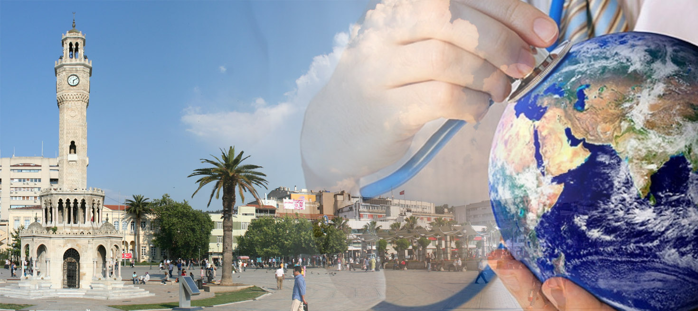

İzmir Sağlık turizmi
İzmir,sağlık turizmi kapsamında; tarih öncesi çağlardan günümüze her dönemde özelikle medikal (tıp) turizm ve termal turizme yönelik ciddi potansiyele sahip olmuştur.Antik dönemde Bergama-Asklepion Anadolu’nun önde gelen sağlık merkeziydi. Bergama Sağlık Tanrısı Asklepios'a adanmış üç büyük sağlık merkezinden biri olan Asklepion’da tıbbın sembolü olan çift yılanın tasvir edildiği sütun yer almaktadır. Farmakolojinin babası olarak adlandırılan Galenos, Bergama Asklepion’unda hastalarını tedavi etmiştir. Antik dönemin ünlü Asklepion Sağlık Merkezi, insan sağlığı ile ilgili bilimsel çalışmaların, tıbbi müdahalelerin yapıldığı yer ve eczacılığın başlangıç noktası olarak bilinir. Uygulanan tedavi yöntemleri arasında; ruhsal hastalıklarda hastaların uyku odalarında uyutularak rüyalarının rahip hekimlerce yorumlanması (telkin tedavi), bedensel hastalıklarda sıcak, soğuk ve çamur banyoları, şifalı otlarla tedavi, diyet kürleri, bitkisel yağ ya da merhemlerle yapılan masajlar, kan aldırma, güneşlenme terapileri yer almakta ve gerekli görüldüğünde cerrahi müdahaleler yapılmaktaydı.Günümüzde ise İzmir’deki üniversitelerin birçoğunda tıp fakültelerinin bulunması, uluslararası kriterlere uygun akreditasyona sahip özel hastanelerde ve kamu hastanelerinde uzman doktorların ve uzman sağlık ekiplerinin olması, her türlü cerrahi müdahalenin ve hatta organ nakillerinin rahatlıkla yapılabilir olması, sağlık turizminde önemli bir potansiyele sahip olduğumuzun ve sektörün hızla büyüyüp geliştiğinin göstergesidir.Ayrıca, sağlık turizmi alanında çok cazip devlet destekleri söz konusudur. İzmir’deki hastanelerden bir kısmı yurt dışı bağlantılı olarak çalışmakta ve sağlık turizmi kapsamında yurt dışında getirtilen hastaların tedavi, ulaşım ve konaklamalarına yönelik her türlü hizmet paket program halinde bir arada sunulmaktadır.Sağlık turizmini ön plana çıkarmamız İzmir turizmi için önemli bir ayrıcalık olacaktır.
İzmir il genelinde faaliyetini sürdüren Sağlık tesislerinden Uluslararası Sağlık Turizmi yetki belgesi almak isteyen tüm kurumların yönetmelik çerçevesinde başvuru dosyalarının hazırlanması ve gerekli denetimlerin yapılarak bakanlığa bildirilmesi,
İzmir il genelinde faaliyetini sürdüren 1618 sayılı Seyahat Acenteleri ve Seyahat Acenteleri Birliği Kanunu uyarınca A grubu seyahat acentelerinden Uluslararası Sağlık Turizmi yetki belgesi almak isteyen tüm kurumların yönetmelik çerçevesinde başvuru dosyalarının hazırlanması ve gerekli denetimlerin yapılarak bakanlığa bildirilmesi
İzmir il genelinde faaliyetini sürdüren Aile ve Sosyal Politikalar Bakanlığıtarafından ruhsatlandırılmış Engelli bakım merkezleri ve Yaşlı Bakımevi ve Huzurevlerinden Konaklamalı Fizik Tedavi Ve Rehabilitasyon Merkezleri Yönetmeliği kapsamında yetki belgesi almak isteyen tüm kurumların yönetmelik çerçevesinde başvuru dosyalarının hazırlanması ve gerekli denetimlerin yapılarak bakanlığa bildirilmesi